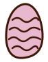
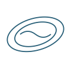

景色まで、ごちそう。
目の前に広がる浜名湖。
いつものカフェとは違う、湖上の眺め。

Lake Float Caféin Kanzanji静岡大学 舘山寺の魅力再発見プロジェクト
Lake Float Caféin Kanzanji
コーヒーと、おやつと、いつもの友達。
浜名湖に浮かぶ、2日間だけのカフェへ。
静岡大学の学生がつくる、湖上のカフェタイム。

01 — THE EXPERIENCE
舘山寺で、いつもと少し違う寄り道を。
浜名湖の上で飲食を楽しむ「LAKE FLOAT CAFÉ」。
学生目線で、舘山寺の新しい楽しみ方をお届けします。
目の前に広がる浜名湖。
いつものカフェとは違う、湖上の眺め。
友達とおしゃべりしながら、ひと息。
舘山寺のお出かけに、もうひとつの楽しみを。
11月14日・15日の限定開催。
友達と日程を合わせて、湖の上へ。
02 — ABOUT SIX FLOAT
今回の体験の舞台は、水面に浮かぶユニット式のフロート「Sixフロート」。六角形のパーツをつなぐことで、花のようなかたちの浮島が生まれます。
クッションを敷いた床に座り、湖面のやわらかな揺れを感じながら。水辺の景色を身近に感じる、くつろぎの時間を過ごせます。
複数のフロートユニットをつなぎ合わせて、みんなで囲んで座れる空間に。友達と同じ景色を眺めながら、おしゃべりを楽しめます。
穏やかな日の浜名湖で、湖上のカフェタイムを。岸から眺めるだけでは味わえない、水の上で過ごす体験をお届けします。
お出かけ前に、開催情報をご確認ください。
05 — SAVE YOUR LAKE TIME
まずは、友達と行ける日を相談。
予約ページで時間・人数・詳細を確認してからお申し込みください。
11月14日（土）／ 開催時間 9:00〜15:00
所要時間・定員・料金・空き状況は
予約ページでご確認ください。
予約URLが決まり次第、こちらからご案内します。
雨天・荒天時は中止となります。
06 — GOOD TO KNOW
雨天・荒天の場合は中止となります。開催可否は当日の状況に応じてお知らせします。お出かけ前に、開催情報をご確認ください。
予約枠ごとの人数・料金・所要時間などは、予約ページでご案内する予定です。現在は詳細を準備中です。
当日受付の有無は現在確認中です。予約方法とあわせて、決まり次第お知らせします。
会場は浜名湖ベイストリート前の湖上です。集合場所・受付・乗船までの案内は決まり次第お知らせします。
07 — OUR PROJECT
静岡大学情報学部の学生が立ち上げた、
「舘山寺の魅力再発見プロジェクト」。
観光地としての歴史がありながら、若い世代にはまだ知られきっていない舘山寺。私たちは学生ならではの発想で、新しい来訪のきっかけをつくることを目指しています。
今回の「LAKE FLOAT CAFÉ」は、浜名湖という土地の資源と地域の食を組み合わせた企画。静岡大学情報学部の学生16名が中心となり、地域の皆さまとともに2日間限定で開催します。
企画・運営：静岡大学情報学部 学生16名